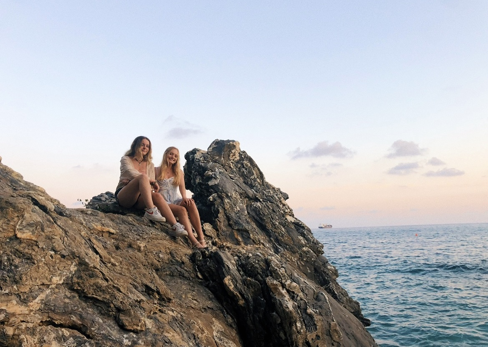

The first time I went to Italy was on a school trip in March of sophomore year. We went to Rome and a few smaller areas that my Latin teacher wanted to show us for educational purposes. On this trip, however, we went to a really small city called Nervi in Geneva Italy. Bronwyn’s cousins, who live in England, have a flat in Nervi for the vacation home. It was super authentic and the culture was much more intense than in Rome. Most people did not speak English, so it was difficult to communicate. Nervi is on the beautiful Mediterranean coast. The ocean was so salty and warm. I swam all the way out to this massive rock in the Sea and floated on my back in the water. The beach was rocky and there was no sand.
The food was delicious. There was a heavy emphasis on seafood since the town is on the coast. The town was small enough for us to explore the area completely. Bronwyn and I would wake up in the morning and go on nice morning walks. Our breakfast in the apartment was usually something simple like cereal or toast. In the afternoons we would go to the beach and go swimming and tan in the sun. At night we would go to dinner at one of the local restaurants and we would try a bunch of different dishes. One night there were fireworks over the sea which was so fun and what seemed like the whole town came out to watch them. I am not sure if there was a special occasion, but it was definitely a fun surprise for us tourists.